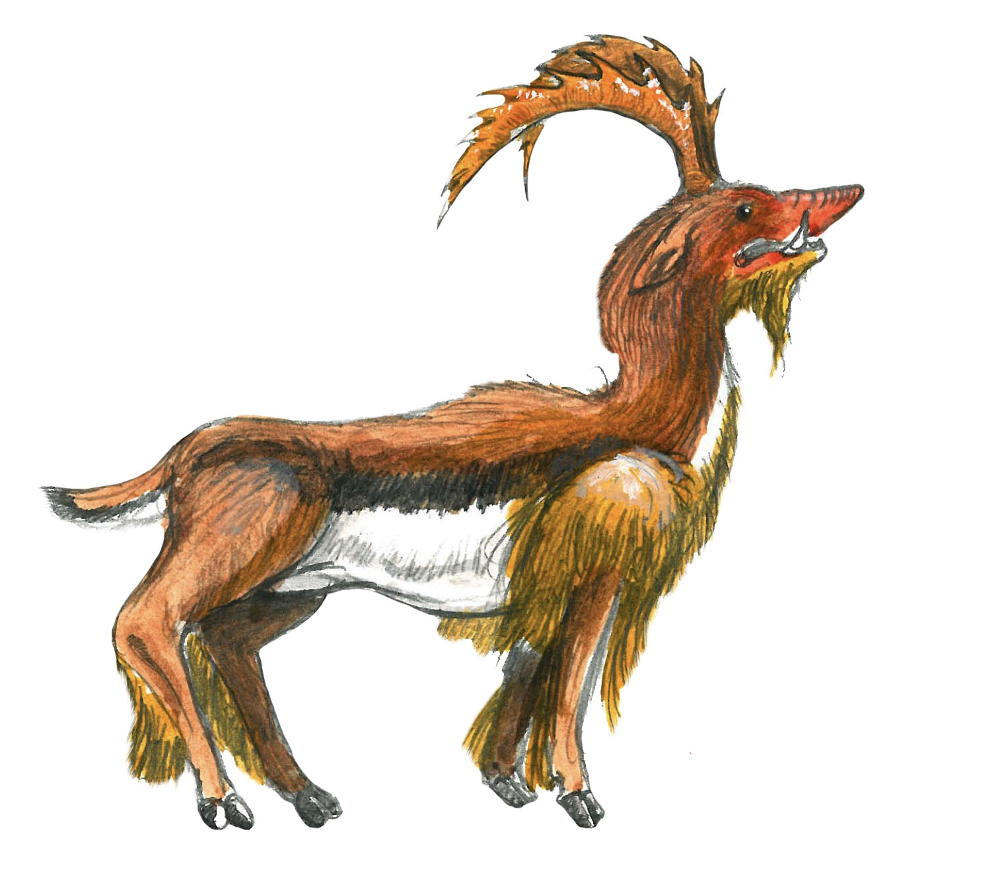
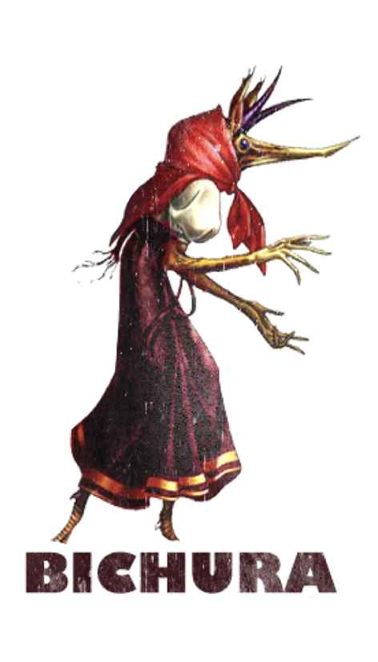
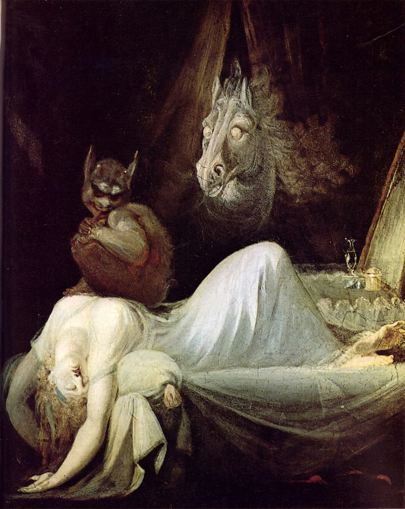
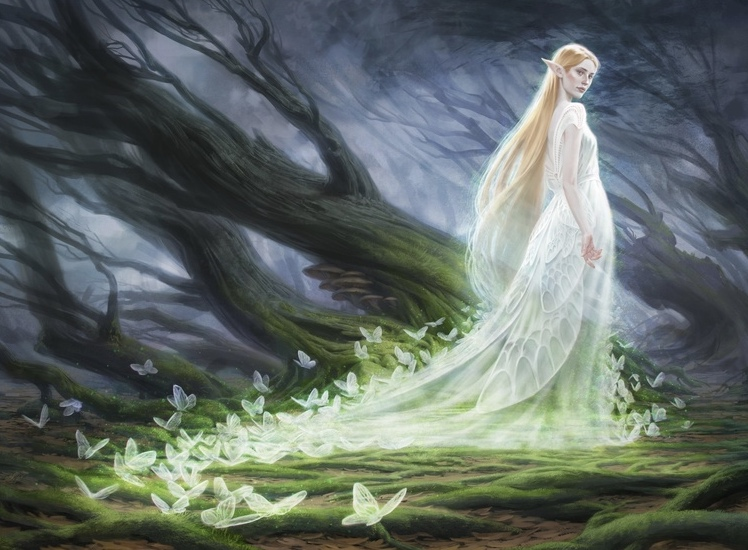
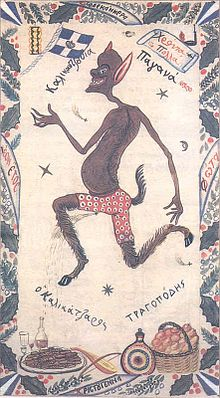
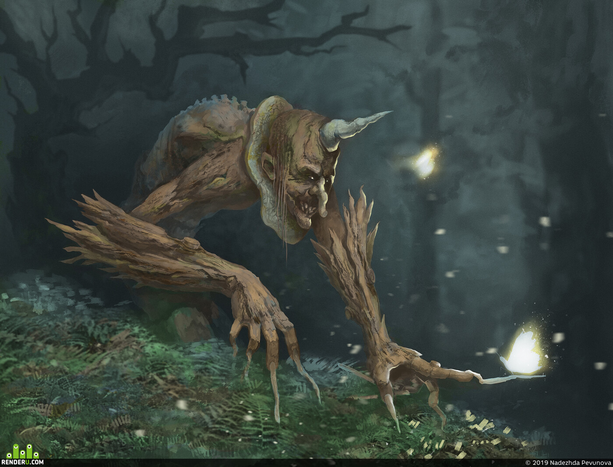
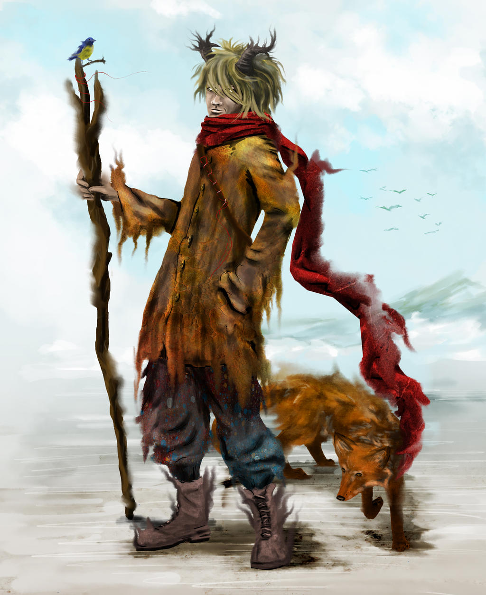

Mythical Creatures Around the World
7 Turkic Mythical Creatures
To note, this mythology isn't specific towards the present-day country Turkey. The term "turk" refers to those of any of the earlier Turkic people whereas "turkish" refers specifically to the people and langauge of today's country Turkey; the current six independent Turkic countries are Azerbaijan, Kazakhstan, Kyrgyzstan, Turkmenistan, Turkey and Uzbekistan. Turkic mythology derived from the influences of many different mythologies. Two that are featured in the mythology is Tengriist and Shamanist. Tengriist is an ancient religion from Central Asia and the Eurasian steppes that was based on animism and shamanism and generally centered around the sky god Tengri. Shamanist is a religious practice involving their practioners believing in the interaction with the spirit world through altered states of concsiousness, like a trance; by directing spiritual energies into the physical world, they are able to heal as well as allow other purposes through their practices. Especially during the Turkic migration, some of the myths were later elaborated with Islamic symbolism. In addition, other mythologies influenced Turkic mythology such as Mongol mythology and later Tibetan Buddhism; it has also been influenced by more local mythologies such as Tatar mythology in which elements of Finnic and Indo-European mythologes co-exist. In Turkic mythology, there are many gods, legends and epics, and symbolic animals. For example, there is Tengri, the first primordial deity of the early Turkic people who was known as the Sky god that determined their fates. Symbolic animals include horses, dragons depicted as snakes or lizards, and deer. Since the Turks were of nomadic culture, the horse is one of the main figures and was considered an extension of the individual especially of males.
Calopus (also known as a Chatloup or an Aptaleon)

Calopus sourced from A Book of Creatures
This intriguing creature was known to the Greeks as an Analopos and a Calopus (meaning "pretty foot") to the Romans. Almost as tall as an average human, a calopus is said to have many different appearances from resembling a roe deer to having features of a wolf, a boar, a feral cat and a reptile; some sources even added porcupine quills, a goat's beard or short legs. The most consistent and known feature of this creature was its large saw-toothed (or ram-like) horns which are able to shred off human limbs or ram a tree down. They're believed to inhabit India, Syria, and the Euphrates basin which is located in regions of Turkey, Iraq and Syria. The rarity of these beautiful creatures is said to be the responsible of Alexander the Great who encountered some in India. Though tough were their horns against their shields, these creatures were no match for Alexander's soldiers, and as a result they slaughtered hundreds of thousands of these animals. Further mentions of the Calopus also date back to the time of the Babylonians, and its appearance was sometimes used for symbolic purposes in the Middle Ages such as when granting armorial insignias.
Bichura

Bichura sourced from Pinterest
The Bichura is a house spirit that seems to forewarn bad omens include ones of death. In Tatar Turkic folklore, its said to live in every house and able to shapeshift into a cat, a dog, or a human wearing a dress. These spirits warn the members of the household of danger by pulling on their hair or making a moaning or howling noise. For instance, specifically hearing it cry forewarns a death in the family. Spotting it is a warning of death ahead. The tricky thing about this spirit is it can grow discontent which will lead it to play tricks such as rattling small objects, breaking dishes, leaving muddy footprints, cause creaking in the walls and knocking on pots. The household members would then need to figure out what is wrong and fix it in order for the bichura to be at ease again. If the members aren't able to do so, they can rectify the situation. Luckily, living with a Bichuras is usually fine as they're mostly harmless; some sources say they even do housework.
Basty

Der Nachtmahr/The Nightmare posted by Albert Russo
With its name derived from the Turkic word kara-basty which means "black pressure", a Basty is a spirit or a goblin of nightmares that sits on sleeping people and bring them bad dreams. A Basty often targets females and sits on their chests. They become heavier until their weight awakens their victims at which point the victim is unable to move and are forced to experience the horrible nightmares which can be sometimes be lucid dreams. A Basty is known for its shapeshifting abilities, able to change into a cat, dog, snake or a fox. In addition, they're able to fly or run like a horse. Some say a Basty could take on a form as a beautiful woman who visit men in their dreams and torture them with desire; this would ultimately leave them getting drained of life more and more with each visit. In addition, some Basty beieved to enter the bedroom through a keyhole and strangle their victims instead of giving nightmares. A method that could be used to keep the creatures away would be laying a knife or some iron or steel items under a pillow. There are different types of Basty in regions of Anatolia (also known as Asia Minor, a peninsula of land that's the westernmost protrusion of Asia). These types include an Al-basty, a Kara-basty, a Kul-basty and a Sary-basty.
Irshi

©Elvish Spirit Guide by Anna Steinbauer
An Irshi is basically a fairy-like spirit, winged and radient. They are known for having magical abilities and having a kind and gentle nature. They're depicted as what you'd picture as a typical pretty female fairy: youthful, beautiful, and elegant while experts in the art of dancing. In addition, these creatures are unable to lie and are said to have shape-shifting powers; this is somewhat a result of various animals being described as Irshi. In some tales, these spirits are actually described as fairies with magical powers and act as mentors for humans. Other tales tell of Irshi protecting a Tigin (a prince) or Begüm (a princess). However, despite being known for being gentle and sweet, other tales regarded them as a hidden species, demons, spirits of the dead or descendants of fallen angels. In these kinds of tales, Irshi are known for possessing fiery eyes and only appearing at night or in the evening. They are also prone to kidnapping babies and leaving changlings in their place; they're sometimes prone to kidnapping young men and women as well.
Karakoncolos

Karakoncolos sourced from Pinterest
This is devil creature or boogeyman from the Ottoman Turkish myths that appears during one of the coldest days of winter and stand in a dark murky street corner to ask passing people seemingly ordinary questions. These people must answer his questions using the Turkish word for "black" ("kara") or else they'll be struck dead. It is said this malevolent creature is able also to call people out by imitating the voices of their loved ones, thus risking its victims to freezing to death if they don't awaken from its charm. The Karakoncolos is sometimes said to have thick hair fur like the Sasquatch and could either be tricky but harmless or something truly evil. In Burgarian mythology, the creature is known as the Karakondjul (or Karakondjol) that walks at night. They'd have custom called the Koukeri (or kukeri) which is meant to scare away the creature or prevent contact with it.
Shurala (or the Şüräle)

Shurale sourced from Against the Wicked City
The Shurala is a forest demon that lives deep in the Tatar and Bashkir forests. It is said to be a humanoid creature with thick fur and known for its single horn on its forehead and its long bony fingers. This demon lures unfortunate travelers deeper into the forest and into thickets where they literally tickle them to death (its most known trickery). The Shurala is also able to shapeshift into many different forms. As a human, it appears as a peasant with glowing eyes and wearing its shoes backwards. In addition to shapeshifting, the Shurala has other tricks such as making peasants sick or hiding axes of woodcutters. It is said that in order to find your way out of the forest and avoid the Shurala's trickery, you must wear your clothes inside out and wear your shoes on the opposite feet. You could also bargain with it as farmers and sheperds had before, making pacts with the forest demon to protect their crops and sheep. Those who could even befriend the Shurala could learn the secrets of magic. The most notable story featuring the Shurala was a poem written by Ghabdulla Tuqay (or Ğabdulla Tuqay) which tells of a woodcutter that encounters the Shurala and manages to trick the demon in order to escape its tickling game.
Archura

Archura by AcrobaticRabbit
An Archura is a shapeshifting forest spirit with the purpose of protecting the forests and animals; it's even able to speak with the birds in order to tell them when to migrate. He can appear as a peasant man with glowing eyes but is able to change his size from that of a blade of grass to a tall tree. In his true form, his hair and beard are composed of living grass while also possessing horns, a tail and hooves while having no shadow. However, Archuras have a resentment for humans and so act as mischievous creature towards them by doing a range of tricks such as removing signs from their posts or emitting horrible cries, but they could also imitate voices of people in order to lure them back to their caves where they could tickle them to death. In addition to misguiding humans for their enjoyment, they also kidnap young women. Their dislike for humans, however, doesn't make them neccessarily evil as they still serve as protectors of their forests and even keep grazing cattle from wandering too far into their forests. However, if more than one Archura inhabits a forest, they'll fight for the territory which could result in knocking down trees and scaring animals.
sources:
List of Turkic Mythological Creatures - travelnhistory.comList of Turkic Mythological Creatures - fairychamber.com
Calopus - abookofcreatures.com
Calopus - non-aliencreatures.fandom.com
Calopus - cryptidz.fandom.com
Bichura - en.google-info.org
Basty - en.wikipedia.org
Irshi - fairychamber.com
Irshi - en.wikipedia.org
Karankoncolos - villains.fandom.com
Shurale - en.wikipedia.org
Shurale - karkadann.fandom.com
Archura - en.wikipedia.org